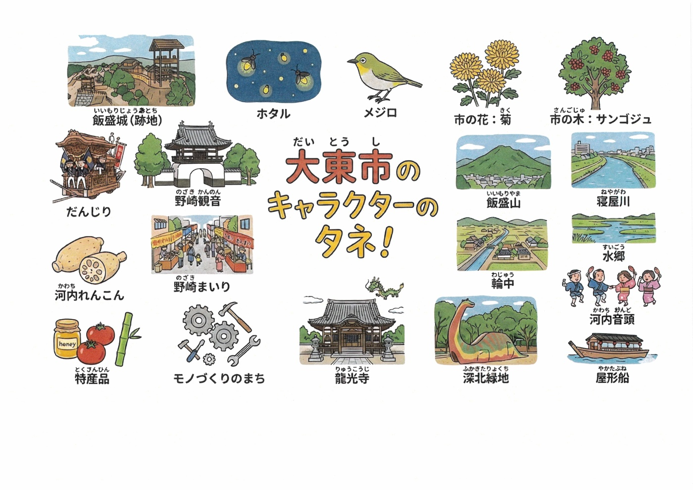

大東市の
キャラクターのタネ！
大東市らしさをキャラクターに盛り込むヒント集だよ。
知っているもの、好きなものを選んで、キャラクターの「タネ」にしてみよう！

タップで拡大できるよ
タネの使い方
- ひとつ選ぶ — 「ホタル」みたいに、気になるタネをひとつえらんでキャラクターにしてみよう。
- 組み合わせる — 「河内れんこん」＋「だんじり」など、ふたつ以上を組み合わせてもおもしろい！
- タネ以外でもOK — このリストにないものでも、大東市らしいと思うものがあったらどんどん使ってね。
- 性格や特技も考えよう — タネにあわせて、どんなせいかく？どんなとくぎ？を考えると、もっと魅力的になるよ。
▶ 応募フォームへ